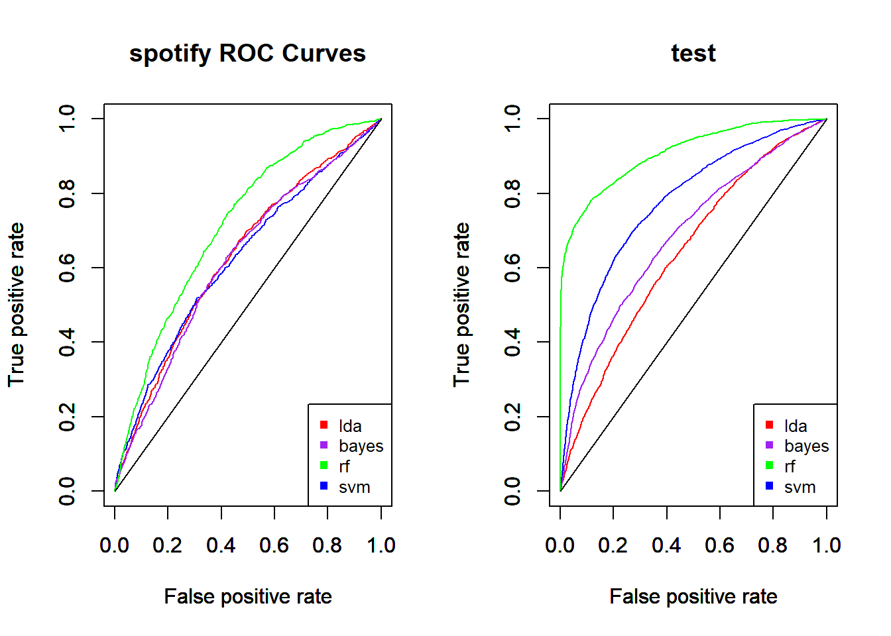

Chapter 7 Preparation of the data base
7.1 restructuring
#On charge la base de donnée. Les variables de types "str" sont recodées en facteurs.
spotify <-
read.csv(
"spotify_songs.csv",
header = TRUE,
sep = ",",
stringsAsFactors = T
)
# Etant données qu'il n'y a que 15 valeurs manquantes, on décide de supprimer les individus contenant ces valeurs.
sum(is.na(spotify))## [1] 15spotify = na.omit(spotify)
# Lignes dupliquées :
spot1 <- spotify[!duplicated(spotify$track_id), ]
# spot2 <- spotify
# spot2 %>% distinct(track_id)
# spot3 <- spotify[duplicated(spot2$track_id),]
# spot4 <- spotify[!duplicated(spotify$track_name),]
#Changement du nom des levels:
spot1$key <- recode_factor(
spot1$key,
"0" = "C",
"1" = "Db",
"2" = "D",
"3" = "Eb",
"4" = "E",
"5" = "F",
"6" = "Gb",
"7" = "G",
"8" = "Ab",
"9" = "A",
"10" = "Bb",
"11" = "B"
)
spot1$mode <-
recode_factor(spot1$mode, "0" = "mineur", "1" = "majeur")
# recodage de la date / regroupement par tranches :
spot1$track_album_release_date <-
as.Date(spot1$track_album_release_date , format = "%Y")
spot1 <- spot1 %>% mutate(year = year(track_album_release_date))
spot1$years <-
cut(
spot1$year,
breaks = c(1956, 2000, 2010, 2015, 2018, 2020),
diag.lab = 0,
labels = c(
"1956-2000",
"2001-2010",
"2011-2015",
"2016-2018",
"2019-2020"
)
)
# Suppression de instrumentalness mal codé :
spot1 <- spot1[, -c(7, 19)]
# Recodage de track-popularity / regroupement basse/autres :
popularity <- cut(spot1$track_popularity, c(-1, 12.5, 100))
spot_B = cbind(popularity, spot1)
spot_B <- spot_B[, -5]
# spot_B$popularity <- recode_factor(spot_B$popularity,
# "(12.5,100]" = "Autre",
# "(-1,12.5]" = "basse")
spot_B$popularity <- recode_factor(spot_B$popularity,
"(12.5,100]" = 0,
"(-1,12.5]" = 1)
# On enlève les variables non pertinentes pour la classification :
spot_B <- spot_B[, -c(2, 3, 4, 5, 6, 7, 8, 10,23)]
# On efface les bases inutiles
rm(spot1, spotify)plot(spot_B$popularity)
We can observe a high imbalanced repartition on the “popularity” variable.
7.2 Partitioning :
Training and test sets are created with random sampling. First, we split the training set off. Then whe create the evaluation and test sets. Hence we create two groups of datas, one which is standardize and the other which is not. You can see the functions used in the functions_UCR.R file.
#posssibilité de changer les paramètres prop1, prop2, seed1, seed2
datas <- split_standard(spot_B, "popularity", mod = "standard")
datasNS <- split_standard(spot_B, "popularity", mod = "nonstandard")
# verif
sum(nrow(datas$train),nrow(datas$test),nrow(datas$eval))==nrow(spot_B)## [1] TRUE